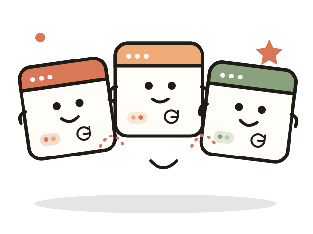

Keep the worlds apart
Separate slots.
Separate sessions.
Give each Muse slot its own browsing space. Less “wait, which account is this?” and more getting on with the thing you opened it for.
A tiny bit of order for your Muse sessions
Muse Number 3 puts three separate Muse browsing slots in one Android app—so each session can mind its own business.
The short version
One familiar place to launch three separate sessions.
Three slots, zero tab drama

Keep the worlds apart
Give each Muse slot its own browsing space. Less “wait, which account is this?” and more getting on with the thing you opened it for.
Move without the maze
Jump between your three saved places from one small launchpad. No browser-window juggling act required.
The people corner
The community widget sits right in the middle, where it can’t wander off.
The Discord widget is waiting for its address.
Add your server ID in config.js to switch it on.
Keep the little app going
Payment options stay tucked away until a destination is configured and you confirm you meet the age requirement.
Payment options are not configured yet.
Continue to payment